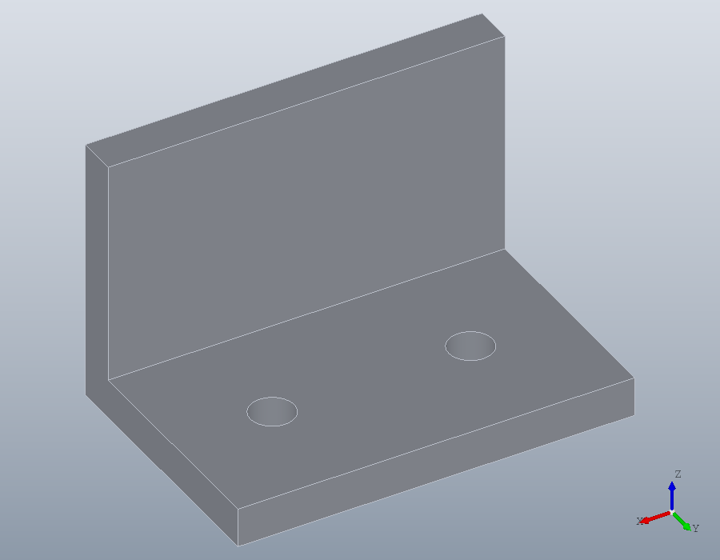
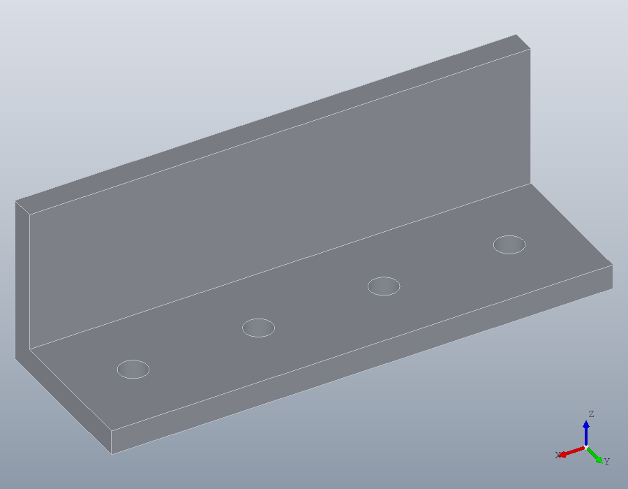
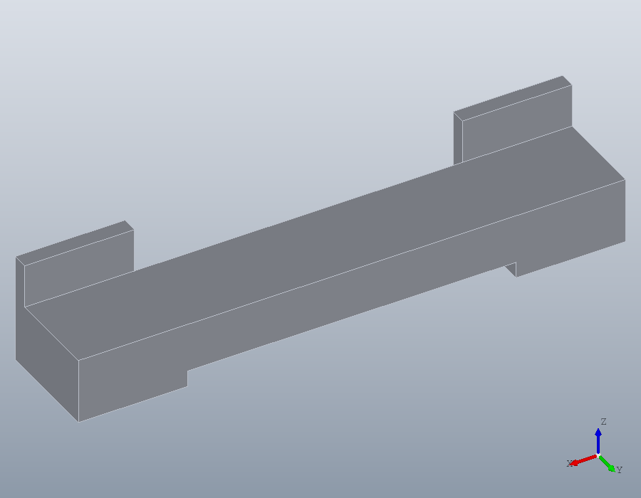

Parts as functions
A part wanted again in other sizes is, in OpenSCAD, a module with parameters. In Octave it is a function: a file of its own, named after the part, that takes the dimensions and returns the solid. Any script then calls it like any other function, and the next tutorial gives it tests.
A bracket in a file
An angle bracket: a base plate with clearance holes for M6 screws and an upright wall, its width and its number of holes chosen by the caller. Saved as bracket.m in the current folder, or in any folder on Octave's path, it is the function bracket.
function B = bracket (W, N = 2)
## B = bracket (W, N): an angle bracket W millimetres wide, its base and
## wall 6 thick and 40 deep, with N holes for M6 screws through the base,
## spaced evenly along it, 2 unless N is given.
if (! (isscalar (N) && N == fix (N) && N >= 1))
error ("bracket: N must be a positive whole number.");
endif
if (W / N < 12)
error ("bracket: %d holes do not fit in a width of %g mm.", N, W);
endif
base = solid.box (W, 40, 6);
wall = solid.box (W, 6, 40);
B = union (base, wall);
x = W * ((1:N)' - 0.5) / N;
P = [x, 23 * ones(N, 1), 6 * ones(N, 1)];
B = hole (B, P, 6.6, Inf);
endfunctionThe first line names the output, the function and its arguments, and N = 2 makes the number of holes optional. The comments under it are its help, which help bracket prints. The two checks refuse a size that makes no sense before any geometry is built. Everything else is the same code a script would hold, with W and N where the numbers were.
Calling it
Each call builds a new bracket from its arguments. With the default, two holes, seen from the open side of the bracket with view, which the surfaces tutorial introduced:
small = bracket (60);
win = show (small);
view (win, 150, 35);
Twice as wide, with four:
large = bracket (120, 4);
win = show (large);
view (win, 150, 35);
A size the function refuses stops with its own message, which names what is wrong:
bracket (60, 6);bracket: 6 holes do not fit in a width of 60 mm.Building on it
The bracket is now a building block like solid.box. A board 18 thick resting on two of them, screwed through their bases from below, the walls to go against a wall of the room:
left = bracket (40, 1);
right = translate (left, [160, 0, 0]);
board = translate (solid.box (200, 34, 18), [0, 6, 6]);
shelf = union (left, right, board);
win = show (shelf);
view (win, 150, 35);
Where to keep it
Octave finds a function when its file is in the current folder or in a folder on its path. Keep your parts in a folder of their own and add it once, in a script or in the file ~/.octaverc, which Octave runs at start:
addpath ('~/parts');Then bracket works from anywhere, and a part made of other parts calls them as shelf was made of brackets above.